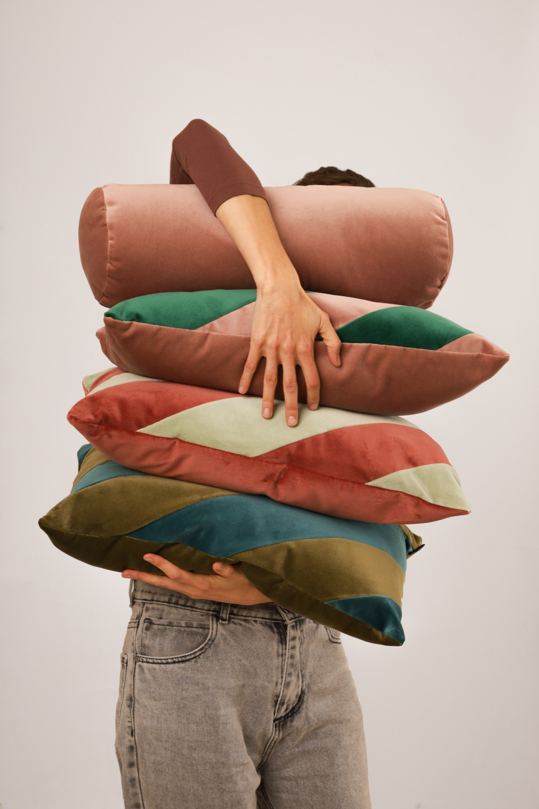
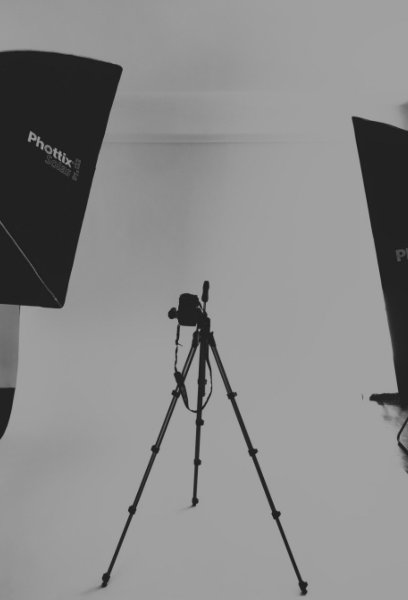

Una forma de mirar
01 — 03



Fotografía de textiles, interiores y producto · Joni Levitt.
El estudio

Imágenes con
identidad propia.
Nos especializamos en fotografía de producto para sitios web y e-commerce, y realizamos clips de video para Mercado Libre y redes sociales. También hacemos retratos profesionales y artísticos, con una mirada cuidada y personal en cada sesión.
Con 15 años de experiencia en el rubro textil y el interiorismo, combinamos creatividad y una mirada estética propia con atención a los detalles, calidad y compromiso con los tiempos de entrega.
Trabajamos de forma personalizada con cada cliente. Nos involucramos en la esencia de su marca para crear imágenes que expresen su identidad y aporten valor a su comunicación.
Belgrano, Ciudad de Buenos Aires.